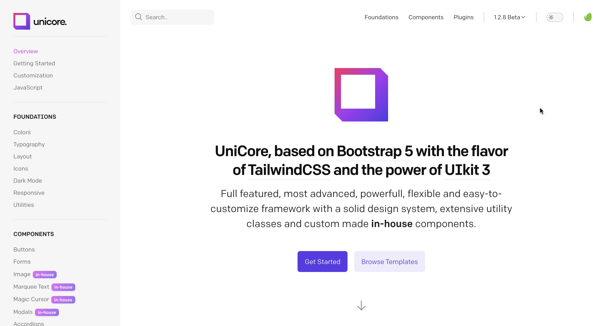
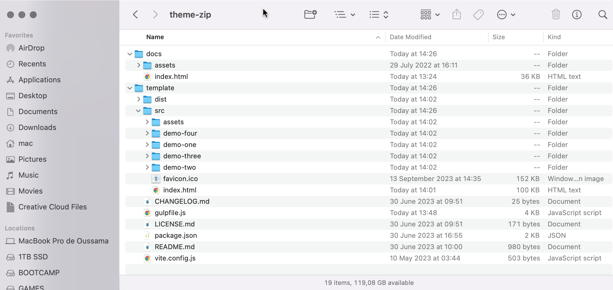

Get familiar with the basic setup and overview of Lexend.
Lexend is a high-quality multi-layout HTML template designed for SaaS websites. We understand the need of a modern SaaS website so Lexend provides an excellent user experience, making it easy for visitors to navigate and find the information they need.
Current version: 1.5.0 (July 11, 2024)
Unzip the template package to any folder and open a command line at that location.
Lexend's dev tools require Node. run npm install and the required packages for the Lexend dev tools will be downloaded to the node_modules directory.
npm install --unsafe-perm
NB: If you are a Mac user add sudo before every command.
NB: If the npm installation failed due to permissions use --unsafe-perm command to install as admin.
When you want to customize or view template use the command line below so while dev mode is running all files in the pages, scss and js folders are monitored for changes, which will inject updated CSS or cause a refresh in ViteJs.
npm run dev
Optional, If you want to know the external output of the scss files use the command line below for debugging:
npm run css:debug
After you've finished customizing your template, it's time to build your production version, which you will find in a folder called /dist/ by using the command below:
npm run build
This option will purge all styles in the base, components, and utilities layers to produce the smallest CSS file possible by only generating the CSS you are actually using in your website.
npx gulp build-lite
Enable/disable or edit these options to suit your needs by editing the assets/js/app-head.js file.
| Option | Default | Description |
|---|---|---|
DEFAULT_DARK_MODE |
!1 or false |
To set dark mode as your default theme change it to !0 or true. |
USE_LOCAL_STORAGE |
!0 or true |
To disable the LocalStorage usage then change it to !1 or false. |
USE_SYSTEM_PREFERENCES |
!1 or false |
To use your visitors system preferences change it to !0 or true. |
| Option | Default | Description |
|---|---|---|
ENABLE_PAGE_PRELOADER |
!0 or true |
Enabled, to disable the page preloader then change it to !1 or false. |
To activate and support RTL languages, Go to your pages header and on the html tag replace <html dir="ltr"> by <html dir="rtl">. This way the site will automatically switch from right to left.
Classes have been added to the Bootstrap Utility API so you can have full control over how layouts are displayed for comprehensive and seamless RTL languages support.
An example ltr:ms-2 rtl:me-2, ltr:start-0 rtl:end-0, ltr:text-start rtl:text-end
Our templates are based on our Unicore framework, is a full featured, most advanced, powerfull, flexible and easy-to-customize framework with a solid design system, extensive utility classes and custom made in-house components.
Unicore is based on Bootstrap 5 with the flavor of TailwindCSS and the power of UIkit 3 JavaScript components as you can build whatever you want without a single line of CSS/SASS code by just using our low-level utility classes and base components.
Unicore has its own documentation explaining how to use all the features that were used to create the Lexend template. You can check it out from here.
Pages are named according to their purpose, and you can open any of the files in your browser to see it in action, or modify the markup to suit your needs.
The HTML markup of Lexend.
<!DOCTYPE html>
<html lang="zxx" dir="ltr">
<head>
<meta charset="UTF-8">
<meta name="viewport" content="width=device-width, initial-scale=1.0">
<title>Lexend</title>
<meta name="description" content="Multi-purpose Marketing Agency & Startup Site Template">
<meta name="theme-color" content="#178d72">
<!-- Meta for SEO and Link Cards -->
<meta name="twitter:image" content="../assets/images/common/lexend-preview.jpg" />
<meta name="twitter:card" content="summary_large_image" />
<meta property="og:locale" content="en_US" />
<meta property="og:type" content="website" />
<meta property="og:title" content="Lexend" />
<meta property="og:description" content="Multi-purpose Marketing Agency & Startup Site Template" />
<meta property="og:url" content="https://unistudio.co/html/lexend/" />
<meta property="og:site_name" content="Lexend" />
<meta property="og:image" content="../assets/images/common/lexend-preview.jpg" />
<meta property="og:image:width" content="1180" />
<meta property="og:image:height" content="600" />
<meta property="og:image:type" content="image/png" />
<link rel="canonical" href="https://unistudio.co/html/lexend/" />
<!-- preload head styles -->
<link rel="preload" href="assets/css/unicons.min.css" as="style">
<link rel="preload" href="assets/css/swiper-bundle.min.css" as="style">
<!-- preload footer scripts -->
<link rel="preload" href="assets/js/libs/jquery.min.js" as="script">
<link rel="preload" href="assets/js/libs/scrollmagic.min.js" as="script">
<link rel="preload" href="assets/js/libs/swiper-bundle.min.js" as="script">
<link rel="preload" href="assets/js/libs/anime.min.js" as="script">
<link rel="preload" href="assets/js/helpers/data-attr-helper.js" as="script">
<link rel="preload" href="assets/js/helpers/swiper-helper.js" as="script">
<link rel="preload" href="assets/js/helpers/anime-helper.js" as="script">
<link rel="preload" href="assets/js/helpers/anime-helper-defined-timelines.js" as="script">
<link rel="preload" href="assets/js/libs/gsap.min.js" as="script">
<link rel="preload" href="assets/js/libs/split-type.min.js" as="script">
<link rel="preload" href="assets/js/helpers/splitype-helper.js" as="script">
<link rel="preload" href="assets/js/core/preloader.js" as="script">
<link rel="preload" href="assets/js/uikit-components-bs.js" as="script">
<link rel="preload" href="assets/js/app.js" as="script">
<!-- app head for bootstrap core -->
<script src="assets/js/app-head-bs.js"></script>
<!-- include uni-core components -->
<link rel="stylesheet" href="assets/js/uni-core/css/uni-core.min.css">
<!-- include styles -->
<link rel="stylesheet" href="assets/css/unicons.min.css">
<link rel="stylesheet" href="assets/css/prettify.min.css">
<link rel="stylesheet" href="assets/css/swiper-bundle.min.css">
<link rel="stylesheet" href="assets/css/magic-cursor.min.css">
<!-- include main style -->
<link rel="stylesheet" href="assets/css/theme/main.min.purge.css">
<!-- include scripts -->
<script src="assets/js/uni-core/js/uni-core-bundle.min.js"></script>
</head>
<body class="uni-body bg-white text-gray-900 dark:bg-gray-900 dark:text-gray-200 overflow-x-hidden">
// Body markup here..
<!-- include jquery & bootstrap js -->
<script defer src="assets/js/libs/jquery.min.js"></script>
<script defer src="assets/js/libs/bootstrap.min.js"></script>
<!-- include scripts -->
<script defer src="assets/js/libs/anime.min.js"></script>
<script defer src="assets/js/libs/swiper-bundle.min.js"></script>
<script defer src="assets/js/libs/scrollmagic.min.js"></script>
<script defer src="assets/js/helpers/data-attr-helper.js"></script>
<script defer src="assets/js/helpers/swiper-helper.js"></script>
<script defer src="assets/js/helpers/anime-helper.js"></script>
<script defer src="assets/js/helpers/anime-helper-defined-timelines.js"></script>
<script defer src="assets/js/libs/split-type.min.js"></script>
<script defer src="assets/js/libs/gsap.min.js"></script>
<script defer src="assets/js/helpers/splitype-helper.js"></script>
<script defer src="assets/js/core/preloader.js"></script>
<script defer src="assets/js/core/marquee.js"></script>
<script defer src="assets/js/uikit-components-bs.js"></script>
<!-- include app script -->
<script defer src="assets/js/app.js"></script>
</body>
</html>
An overview of the custom configured plugins supplied with Lexend.
We made it easy to deal with and even responsive to different screens using breakpoints.
To configure SwiperJs, use the data-uc-swiper attribute and use the built-in options that are explained in the table below.
<div class="swiper" data-uc-swiper="items: 3; dots: .swiper-pagination;"> <div class="swiper-wrapper"> <div class="swiper-slide">Slide 1</div> <div class="swiper-slide">Slide 2</div> <div class="swiper-slide">Slide 3</div> </div> <!-- Add Pagination --> <div class="swiper-pagination"></div> <!-- Add Arrows --> <div class="swiper-button-next"></div> <div class="swiper-button-prev"></div> </div>
We have custom configured responsive control using breakpoints data-uc-swiper-{breakpoint}, the available breakpoints: s, m, l and xl.
<div class="swiper" data-uc-swiper="items: 1; center: true;" data-uc-swiper-m="items: 3; center: false;"> <div class="swiper-wrapper"> <div class="swiper-slide">Slide 1</div> <div class="swiper-slide">Slide 2</div> <div class="swiper-slide">Slide 3</div> </div> </div>
Buil-in Options:
| Option | Value | Default | Description |
|---|---|---|---|
items |
number | 'auto' | 1 |
number of slides per view. |
sets |
number | 1 |
Set numbers of slides to define and enable group sliding. |
active |
number | 0 |
Index number of initial slide. |
connect |
string | null |
Connet two sliders via css class selector. |
gap |
number | 48 |
Distance between slides in px. |
center |
boolean | false |
If true, then active slide will be centered, not always on the left side. |
center-bounds |
boolean | false |
If true, then active slide will be centered without adding gaps at the beginning and end of slider. |
dots |
string | .swiper-dotnav |
String with CSS selector or HTML element of the container with pagination. |
dots-type |
string | bullets |
String with type of pagination. Can be 'bullets', 'fraction', 'progressbar' or 'custom'. |
dots-click |
boolean | true |
If true then clicking on pagination button will cause transition to appropriate slide. Only for bullets pagination type. |
next |
string | .swiper-next |
String with CSS selector or HTML element of the element that will work like 'next' button after click on it. |
prev |
string | .swiper-prev |
String with CSS selector or HTML element of the element that will work like 'prev' button after click on it. |
disable-class |
string | uk-invisible |
CSS class name added to navigation button when it becomes disabled. |
auto-height |
boolean | false |
Set to true and slider wrapper will adapt its height to the height of the currently active slide. |
autoplay |
number | 3000 |
Activate autoplay and set a delay between transitions (in ms). If this parameter is not specified, auto play will be disabled. |
autoplay-init |
boolean | true |
Set to false and autoplay will not be disabled after user interactions (swipes), it will be restarted every time after interaction. |
offset |
number | 0 |
Add (in px) additional slide offset in the end of the container (after all slides). |
fade |
boolean | false |
Enables slides cross fade. |
As you can see, we have shortened some useful options according to their meaning. If you do not find one of the options here, know that it has not been shortened and you should use the default option found in the documentation for this plugin.
To configure TypedJs, use the data-typed attribute and it's options.
<span data-typed="typeSpeed: 80; backSpeed: 50; backDelay: 1500; shuffle: false">
<span>portfolio</span>
<span>studio</span>
<span>agency</span>
<span>creative</span>
</span>
Options:
You can find all options on TypedJs documentation.
To configure AnimeJs, use the data-anime attribute and it's options or our built-in options below.
<div data-anime="translateX: 250; scale: 2; rotate: 1turn; onclick: true;"> Animate me </div>
Buit-in Options:
| Option | Value | Default | Description |
|---|---|---|---|
onclick |
boolean string | false alternate || restart |
Start animation when element clicked. |
onhover |
boolean | false |
Start animation when element hovered. |
onview |
boolean number | false 0 |
Start animation when it's on viewport. You can set an offset in px for ex: 100 or -100. |
autoplay |
boolean | true |
Autoplay animation when element it's on viewport. |
You can find all other options on AnimeJs documentation.
The most streamlined way to make edits and additions to the template CSS is to use the provided user-config.scss, user.scss and user-init.scss files located in the /assets/scss/theme/custom folder.
When used in conjunction with the provided dev tools, your custom CSS is included in main.scss and overrides the default template style.
This is the preferred method as your changes are kept separate from the core framework or template files. By separating your CSS edits into their own files, you can easily overwrite all of the default template SCSS files when you update the template.
If you need to add CSS for additional components or other needs, simply edit user.scss and add any SCSS or CSS you require.
If you prefer to work with Lexend as a static source without the aid of Node, Gulp and Sass, you will need to add custom CSS through a separate CSS file.
We have provided a blank custom.css file in the assets/css folder. To make your custom CSS active, you will need to add the following line after main.scss is referenced in the <head> of each page:
<link href="./assets/css/custom.css" rel="stylesheet" type="text/css" media="all" />
Updates will be released periodically to add new features, provide fixes where necessary and maintain compatibility.
Most often, the updated files are javascript or CSS and your project should need little adjustment in order to stay up to date.
The changelog is be updated with each release and lists the updated files.
To bring your project up to date with the latest version of Lexend, simply download the latest version, unzip the files and replace the old version in your project with the updated version of each Lexend file.
Any breaking changes that affect compatibility with older versions of Lexend will be noted, and further instructions on updating will be provided in the changelog.
We provide support for bugfixes and guidance on using the template including:
However, item support does not include:
To access support, find the support link in your Themeforest Marketplace item dashboard support tab.
In case you need help installing or customizing your template according to your requirements, we are pleased to provide this service by send a message via email support@unistudio.co.
This type of service may charge you a fee depending on your requirements.
We strive to improve our products and we rely on feedback from our customers.
Please feel free to share any feedback about Lexend via your downloads page on Themeforest Marketplace.
Thank you for being one of our valued customers!